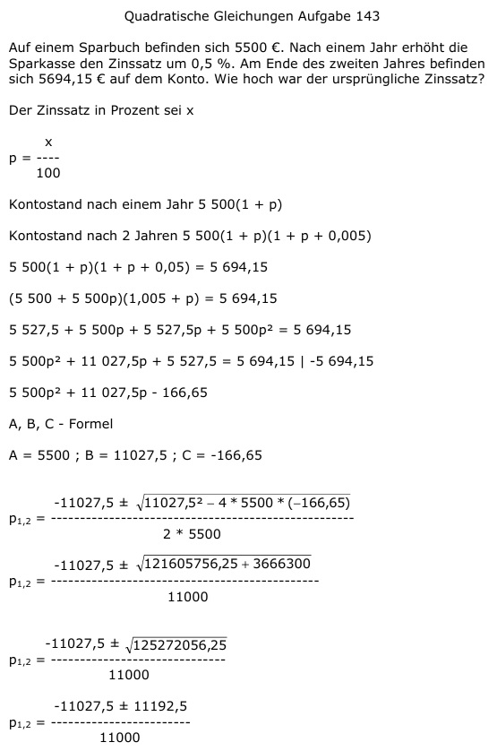

Aufgabe 143 Auf einem Sparbuch befinden sich 5500 €. Nach einem Jahr erhöht die Sparkasse den Zinssatz um 0,5 %. Am Ende des zweiten Jahres befinden sich 5694,15 € auf dem Konto. Wie hoch war der ursprüngliche Zinssatz? Der Zinssatz in Prozent sei x x p = ---- 100 Kontostand nach einem Jahr 5 500(1 + p) Kontostand nach 2 Jahren 5 500(1 + p)(1 + p + 0,005) 5 500(1 + p)(1 + p + 0,05) = 5 694,15 (5 500 + 5 500p)(1,005 + p) = 5 694,15 5 527,5 + 5 500p + 5 527,5p + 5 500p2 = 5 694,15 5 500p2 + 11 027,5p + 5 527,5 = 5 694,15 |-5694,15 5 500p2 + 11 027,5p - 166,65 A, B, C - Formel A = 5500 ; B = 11027,5 ; C = -166,65  -11027,5 ± 11192,5 p1,2 = --------------------- 11000 -11027,5 + 11192,5 165 p1 = --------------------- = ------- = 0,015 --> 11000 11000 p = 1,5% -11027,5 - 11192,5 -22220 p2 = -------------------- = ------- = -2,02 11000 11000 keine Lösung, Zinssatz negativ.